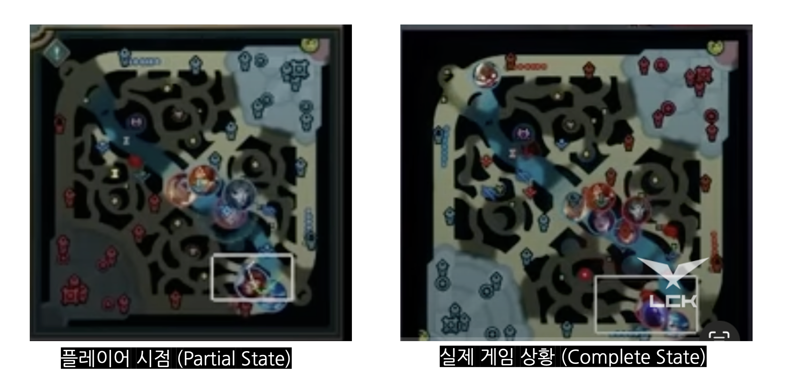
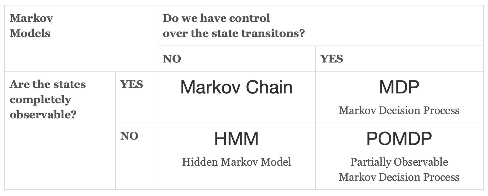
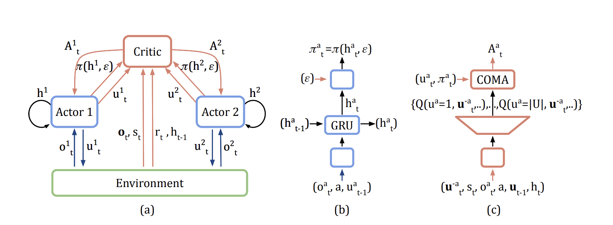
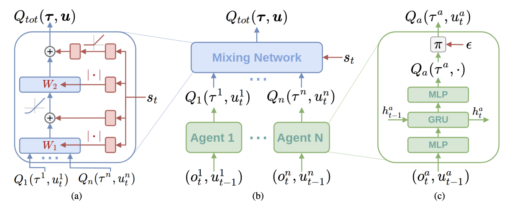

[MARL/01] Multi Agent Reinforcement Learning 기초
RL에서 MARL로
MARL(Multi-Agent RL)은 여러 에이전트가 하나의 환경에서 동시에 학습하는 방식이다. 전통적인 SARL(Solo Agent RL)은 단일 에이전트가 환경과 상호작용하며 최적 정책을 학습한다. SARL은 의사결정이 필요한 다양한 분야에서 뛰어난 성과를 거두었지만, 현실의 많은 문제들은 다수의 주체가 얽혀 있어 단일 에이전트 방식만으로는 한계가 존재한다. 이러한 한계를 극복하기 위해 등장한 MARL은 강화학습의 최적 정책 학습이라는 핵심 목표을 유지하면서도, 다수의 주체 간 상호작용과 집단적 행동 분석을 가능케 하여 강화학습의 영역을 확장했다.
MDP ➡️ POMDP 확장
순차적 행동 결정 문제는 매 타임스텝마다 자신의 행동을 결정하고, 이 과정을 반복하는 과정이다. MDP는 순차적 행동 결정 문제를 수학적으로 모델링한 것으로, 이를 일반화해 해결하고자 하는 RL의 이론적 기반이다.
MDP는 매 순간 완전한 상태 관찰을 전제로 한 이론이다. 그러나 현실 세계에서는 매 시간마다 상태를 완벽하게 관측하는 것이 쉽지 않다. POMDP는 이러한 한계를 극복하기 위해 MDP를 확장한 개념으로, 기존 MDP의 경직된 문제를 해결할 수 있다. 항상 완전한 상태를 관찰하는 MDP와 달리, POMDP는 상태의 일부 정보만을 관찰할 수 있다. 예시를 통해 이를 더 쉽게 이해해보자.

리그오브레전드 게임을 플레이할 때는 왼쪽 이미지와 같이 아군의 위치와 확보한 시야의 모습만 나타날 뿐, 상대편의 정보가 나타나지 않는다. 이때 게임의 모든 정보가 들어 있는 실제 게임 상황은 Complete State, 자신이 처한 환경만 나타나는 플레이어의 환경은 Partial State다.
POMDP(Partially Observable Markov Decision Process)
POMDP는 플레이어의 시점처럼 상태의 모든 정보를 관측할 수 없을 때 이용하는 MDP로, 일반 MDP보다 더 현실적인 모델이다.
\[S,A,T,R,\Omega ,O,\gamma\]- $ S$ : 상태 공간 집합
- $A$ : 행동 공간 집합
- $T$ : 상태 사이의 조건부 전이 확률, $ T(s’\mid s,a)$
- $R$ : $S\times A\to \mathbb {R} $으로 정의된 보상 함수, $R(s,a)$
- $ \gamma \in [0,1) $ : 할인율
- $\Omega $ : 관측된 상태 집합
- $O$ : 관측된 조건부 전이 확률, $ O(o\mid s’,a)$
MDP에서는 상태 $s \in S$ 에서 행동 $a \in A$ 를 선택하면, 전이 확률 $T(s{\prime} \mid s, a)$ 에 따라 다음 상태 $s^{\prime}$ 로 전이된다. 그러나 POMDP에서는 이러한 완전한 상태 $s^{\prime}$ 를 직접 알 수 없고, 에이전트는 관찰 $o \in \Omega$ 만을 통해 상태에 대한 정보를 얻는다. 이때 관찰 확률 $O$ 는 전이된 상태 $s^{\prime}$ 와 행동 $a$ 가 주어졌을 때 관찰 $o$ 를 받을 확률을 의미한다.
상태를 직접 관찰할 수 없는 상황에서 에이전트는 자신의 상태에 대한 확률적 추정값 belief을 유지한다. 이 belief는 가능한 모든 상태에 대한 확률분포로 표현되며, 관찰과 이전 행동들을 바탕으로 Bayesian update과정을 반복해 값을 갱신한다. 결국, 에이전트는 이 belief를 기반으로 정책을 선택하고 의사결정을 내리게 된다.
일반적으로 MARL 환경에서 개별 에이전트는 환경의 완전한 상태를 직접 관찰할 수 없고, 자신의 관찰만으로 의사결정을 내려야 한다. MDP는 완전한 상태 관찰을 전제하기 때문에 이러한 상황을 설명하지 못한다. POMDP는 불완전한 관찰을 기반으로 상태를 추정하고 의사결정을 가능하게 하므로, 각 에이전트의 관점에서 MARL 문제를 모델링하는 데 필요하다.
( + 참고하면 좋은 자료 ) 
- 출처 : http://www.pomdp.org/faq.html
마르코프 의사 결정 과정은 상태를 완전히 관측할 수 있는가, 상태 전이를 통제할 수 있는가를 기준으로 4가지로 나눠진다.
➡️ Markov Chain & MDP 분석 바로가기
환경 속성 변화
Stationary dynamics -> Non-Stationary dynamics
MDP를 기반으로 하는 알고리즘은 Stationary dynamics을 가정한다.Stationary dynamics 가정 하에서는 환경을 구성하는 상태 전이 확률 $T$와 보상 함수 $R$이 변하지 않는다. 하지만 MARL 상황에서는 여러 에이전트가 존재하고, 동시에 별도의 정책을 학습한다. 개별 에이전트는 최적 정책을 찾고자 하지만 현재의 환경이 변화하는 다른 에이전트의 정책에 영향을 받기 때문에 환경이 Stationary하지 않게 변한다고 느끼게 된다. 예시를 통해 이해해보자.
다수의 자율주행 차량이 한 도로 위를 주행하는 시뮬레이션 환경을 생각해보자. 각 차량은 RL 기반의 주행 정책을 학습하고 있으며, 각자 충돌을 피하고 빠른 주행을 목표로 학습한다. 초기에는 다른 차량들이 일정한 속도와 거리 유지 규칙을 따르고 있었기 때문에, 나의 차량은 특정 속도와 안전거리를 유지하는 정책을 학습했다. 그러나 시간이 지나면서 다른 차량들도 동시에 학습을 진행하고, 더 빠른 속도로 주행하거나 더 공격적으로 차선을 변경하는 행동을 학습하게 된다. 이러한 상황에서는 나의 차량 입장에서 동일한 행동을 취해도 이전과 같은 결과가 나오지 않는다. 예를 들어, 특정 거리만큼 앞차와의 거리를 두는 정책이 이전에는 충돌을 방지할 수 있었지만, 이제는 앞차가 더 자주 급정거하거나 차선을 바꾸기 때문에 충돌 확률이 높아질 수 있다. 결국 나의 차량은 이전에 학습한 정책으로는 더 이상 최적의 결과를 얻을 수 없게 되며, 환경이 변하고 있다고 느끼게 된다. 이처럼 여러 에이전트가 동시에 학습하는 상황에서는 다른 에이전트의 정책 변화가 곧 내 환경의 변화로 이어지기 때문에, 환경의 dynamics가 stationary하지 않게 된다.
MARL 속성
MARL은 다중 에이전트 상황이기 때문에 에이전트 사이의 상호작용 방식, 문제 분배 및 학습 방식을 추가적으로 고려해야 한다.
다중 에이전트 사이의 상호작용 방식
에이전트 간 상호작용 방식은 크게 협력과 경쟁으로 나뉜다.
-
협력(Collaboration) : 모든 에이전트가 공동의 목표를 추구하며, 집단 전체의 보상을 극대화하는 것을 목표로 한다. 예를 들어, 다중 로봇 시스템이 하나의 목표물을 함께 운반하는 상황이 협력에 해당한다.
-
경쟁(Competition) : 각 에이전트는 자신의 보상을 극대화하는 동시에, 타 에이전트의 보상을 제한하거나 감소시키려는 전략을 취한다. 예를 들어 게임 환경에서 상대방을 이기기 위해 학습하는 경우와 같다.
-
공존(Coexistence) : 하나의 환경에 협력과 경쟁이 동시에 존재하는 경우로, 일부는 협력하고 일부는 경쟁하는 복합적인 관계가 나타난다. 예를 들어, 팀 기반 스포츠 경기에서는 팀 내 협력과 팀 간 경쟁이 동시에 존재한다.
학습 방법론
1. 독립 학습
Independent Learning
독립 학습은 여러 에이전트가 같은 환경 아래 개별적으로 학습하는 방법론이다. 다른 에이전트를 고려하지 않고 독립적으로 학습하기 때문에, 타 에이전트로 인한 변화를 환경의 일부로 생각한다. 이 방법론은 DQN, PPO와 같은 SARL의 알고리즘을 별도의 수정 없이 바로 개별 에이전트에게 적용할 수 있기 때문에 구현이 쉽다. 하지만 독립 학습은 타에이전트의 영향을 환경으로 취급해 환경을 non-stationary하게 만들어 학습이 불안정하다.

- IQL 알고리즘 이미지, 논문
2. 중앙 집중식 분산 실행
Centralized Training Decentralized Execution (CTDE)
CTDE는 MARL에서 가장 널리 사용되는 방법론이다. 훈련 단계에서는 모든 에이전트의 정보를 중앙에서 통합해 사용하고, 실행 단계에서는 각 에이전트가 자신의 관찰만으로 독립적으로 행동한다. CTDE 방식은 Centralized Critic (CC), Value Decomposition (VD) 두 가지 알고리즘으로 세분화된다.
[1] Centralized Critic (CC)
이해하기 위해 필요한 개념 : Actor-Critic
Actor-Critic은 효과적인 정책 근사를 위해 가치를 추가로 근사하는 방법론이다. Actor는 정책 근사를 담당하고, Critic은 가치 근사를 담당한다.
Centralized Critic 방식은 각 에이전트가 정책을 학습하고, 각 에이전트의 정보와 전체 환경의 정보를 모두 종합해 학습하는 Critic이 존재한다. 독립 학습 방법론은 각 에이전트가 따로 따로 학습을 하고 거시적인 정보를 학습하지 못해 non-stationarity 문제를 해결하지 못한다. 하지만 Centralized Critic 방식은 Critic 함수가 전체 정보를 학습하고 각 에이전트에게 정보를 전달하기 때문에 non-stationarity 문제를 완화한다.

- 대표적인 알고리즘 COMA
[2] Value Decomposition (VD)
Value Decomposition은 개별 에이전트의 로컬 가치함수를 중앙에서 효과적으로 조합함으로써, 전체 팀의 행동 가치를 학습하는 접근법이다. 대표적인 기법으로는 VDN(Value-Decomposition Networks)과 QMIX가 있다.
VDN은 joint Q-value를 각 에이전트의 로컬 Q-value의 단순 합으로 가정한다. $Q_{\text{tot}} = \sum_i Q_i$로 간단히 계산되기 때문에 구조가 간단하고 안정적으로 학습이 가능하다는 장점이 있다. 다만, 에이전트 간의 상호작용을 복잡하게 반영하지 못하는 한계가 존재한다.
이를 개선한 QMIX는 로컬 Q-value들과 state 정보를 종합적으로 조합해 표현력을 높인다. 조합은 비선형적인 인공신경망으로 이루어지며, VDN보다 복잡한 협력이 필요한 환경에서 더 효과적으로 작동한다.

- QMIN 구조
3. 완전 중앙 집중화
Fully Centralized
완전 중앙 집중화 방식은 에이전트의 수와 행동 공간이 상대적으로 작을 때 사용가능한 방법론이며, 협력적 상호방식에만 적합하다. 이 방식은 모든 에이전트의 행동 공간을 하나로 합쳐 싱글 에이전트 문제로 변경한다. 이 방식은 MARL이 갖고 있는 여러 문제를 해결하고, SARL 방법론을 쉽게 적용할 수 있어 유용하다.